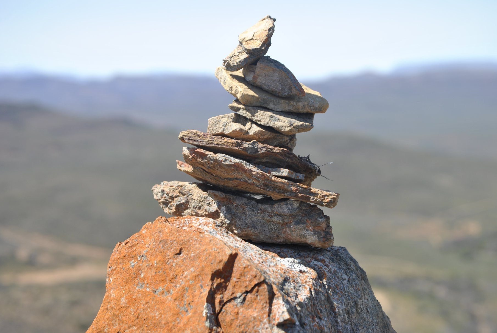
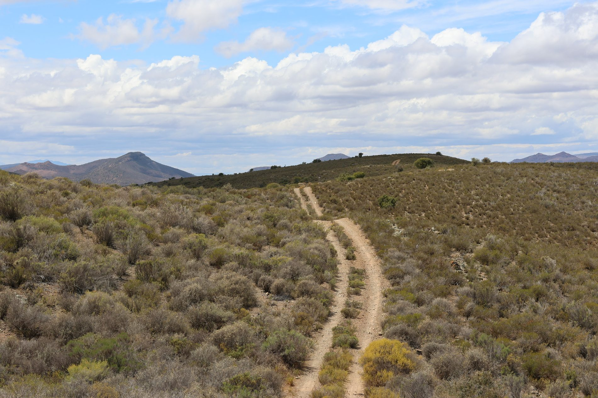
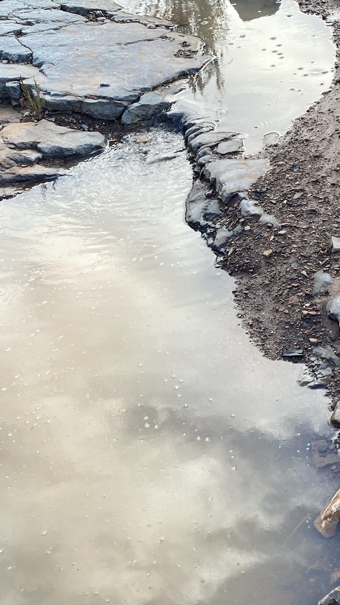

Activities
Hiking Trails
Self-guided trails through kloofs, riverbeds, open plains and mountain viewpoints.
Self-guided trails through kloofs, riverbeds, open plains and mountain viewpoints.
Whether you are up for a short stroll or an all-day hike, African Game Lodge has kilometres of wilderness for you to safely explore. No Big 5 on the reserve means you can hike in safety while absorbing the beauty and game you encounter on the way.

An all-day trail through mountain scenery, kloofs, river beds and succulent Karoo biomes.
ExploreA slow-paced trail suitable for families, with riverbeds, kloofs and fossil examples.
Explore
A half-day trail passing Red House Ruins, birding areas and open wildlife plains.
Explore
A short loop overlooking the pan and birdlife areas, ideal for late afternoon.
Explore
A short late-afternoon walk with glimpses of Montagu and mountain scenery.
Explore